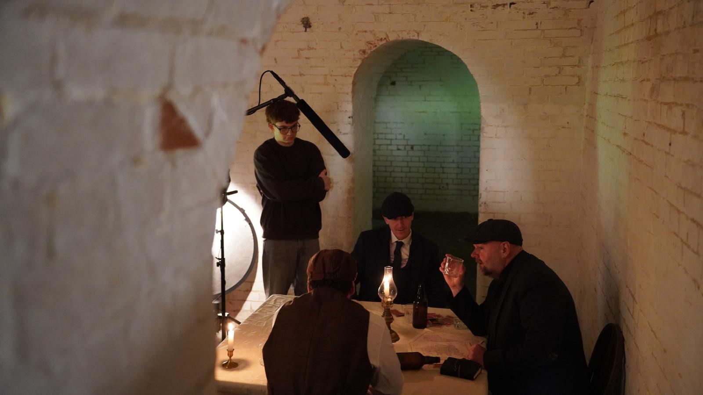
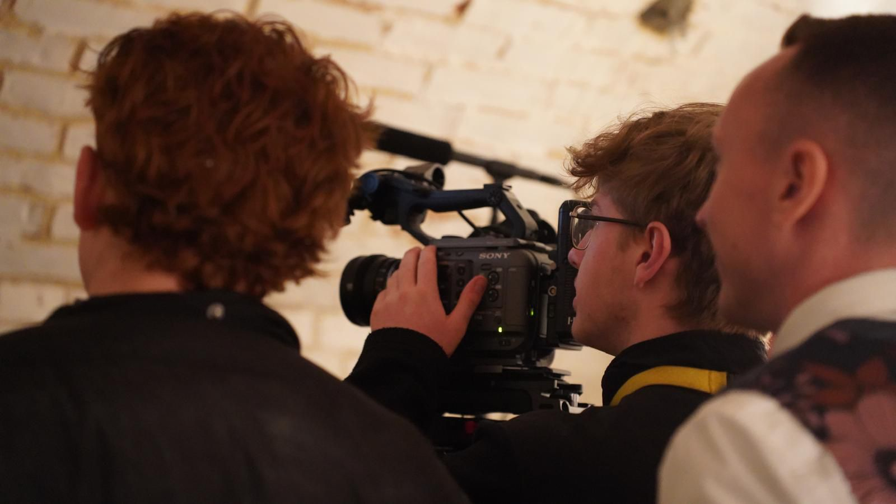
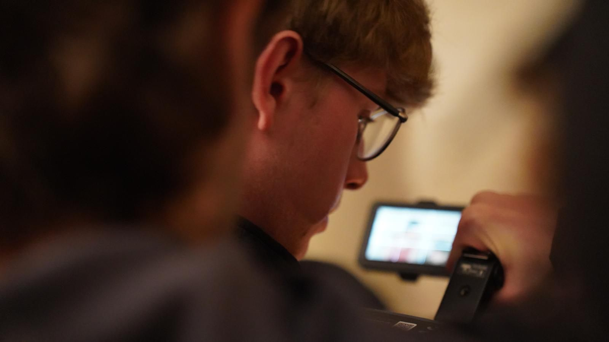

Featured Project
Project Details & Analysis
Film Production · Short Deliverable Portfolio


Project Overview Visual

Pre-Production Research
Behind The Scenes
Behind The Scenes
Project Validation
Core Production Elements & Execution Pipeline
The project faced distinct operational requirements, specifically targeting how recorded reading dialogue accurately matched the atmospheric background environment and underlying emotion of each scene.
A substantial component of the project relied heavily on the careful combination of sound and pictures, establishing a tailored creative balance optimized specifically for targeted student validation.
100%
Audio-Visual Sync
Dual
Technical Focus
2 Focus
Equipment/Software
